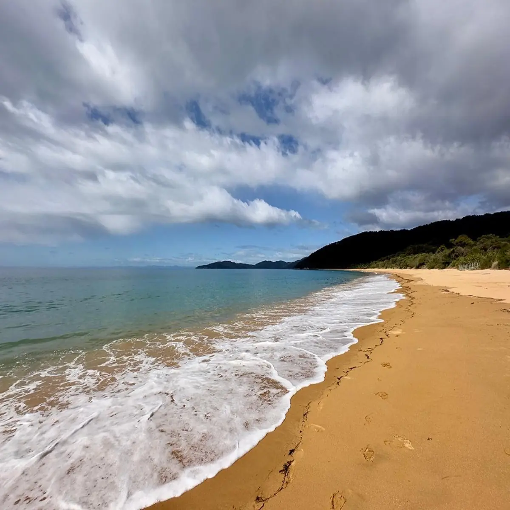

Tōtaranui
Best for a clean first Coast Track day from the Pōhara side of Golden Bay.
Walk feel
Immediate beach-and-bush scenery, clear track rhythm, and a proper national-park feel straight away.
Best for
First-timers, day walkers, and anyone who wants a strong Abel Tasman day without overcomplicating it.
What stands out
Golden bays, forest edges, and the sense that the park starts properly the moment you set off.
Good call when
You want a satisfying day on foot and still want enough margin for weather, tide windows, and a relaxed return.